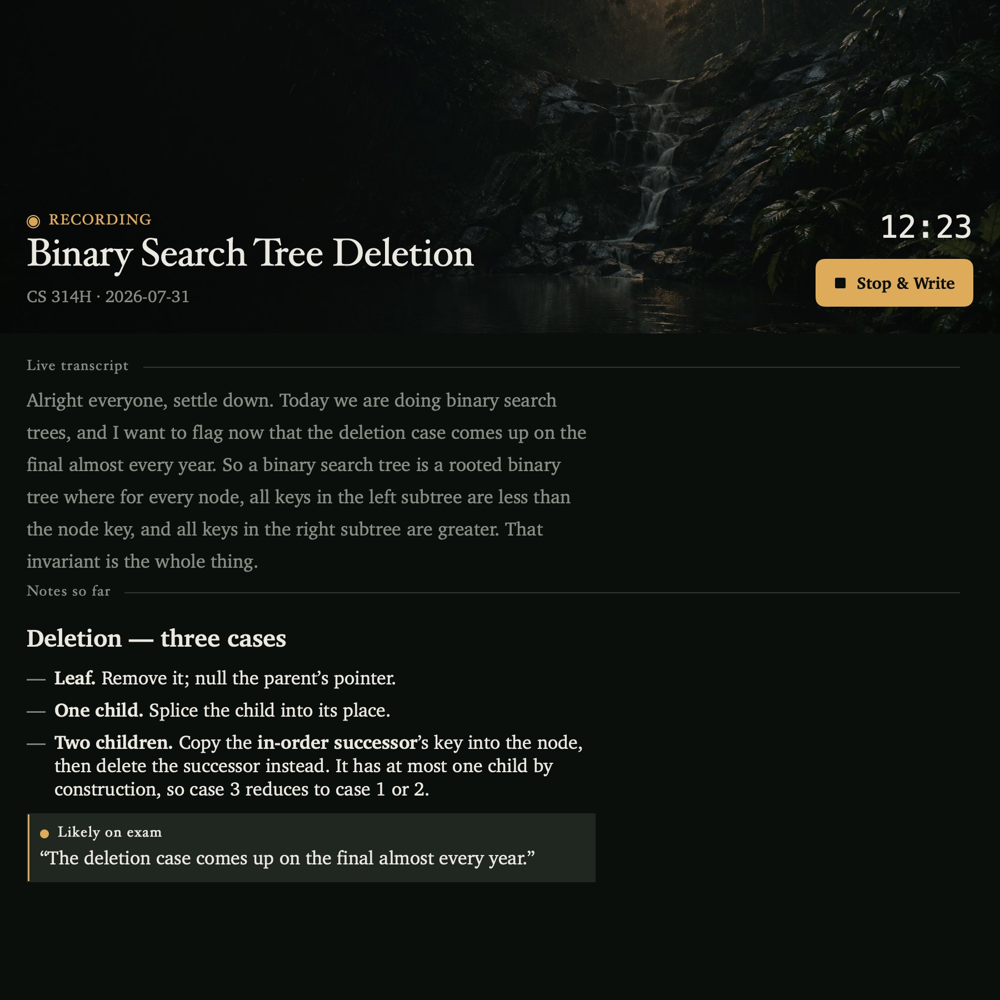
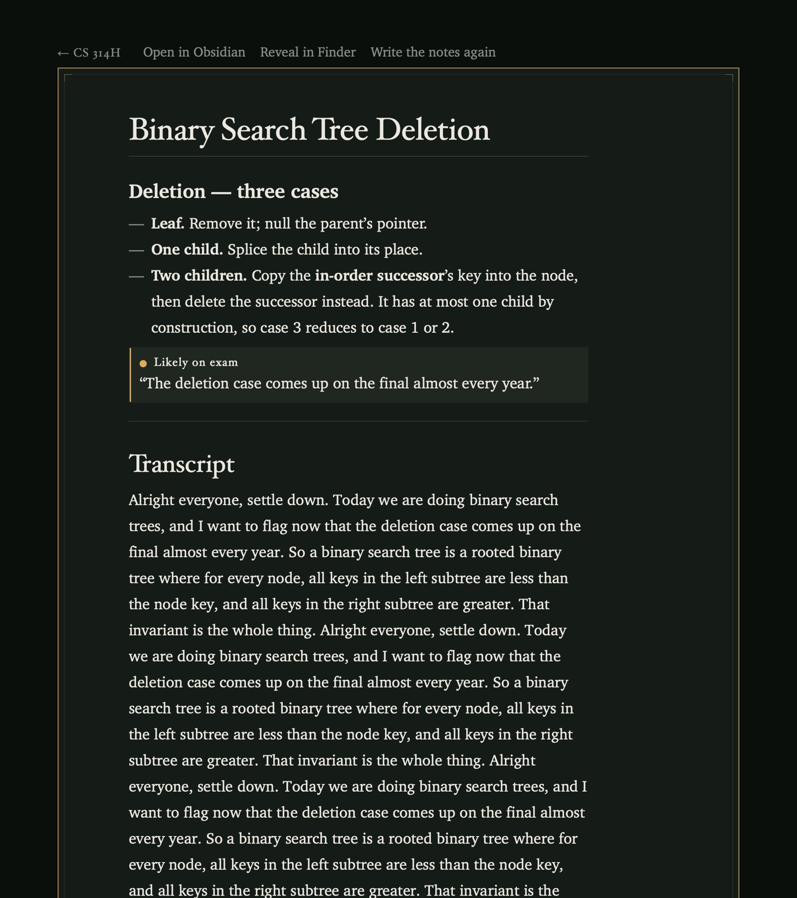
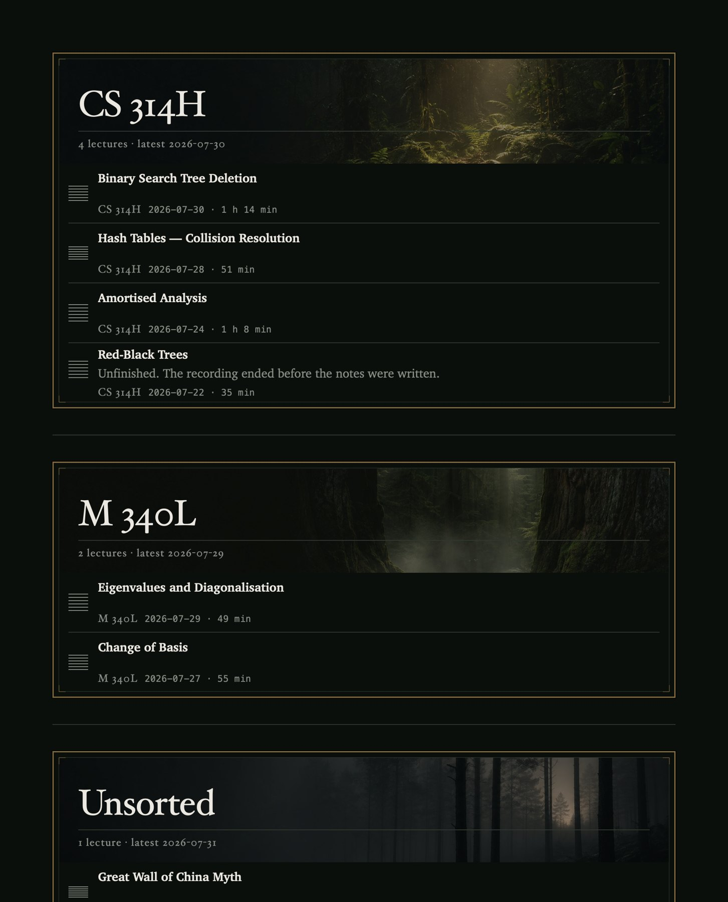
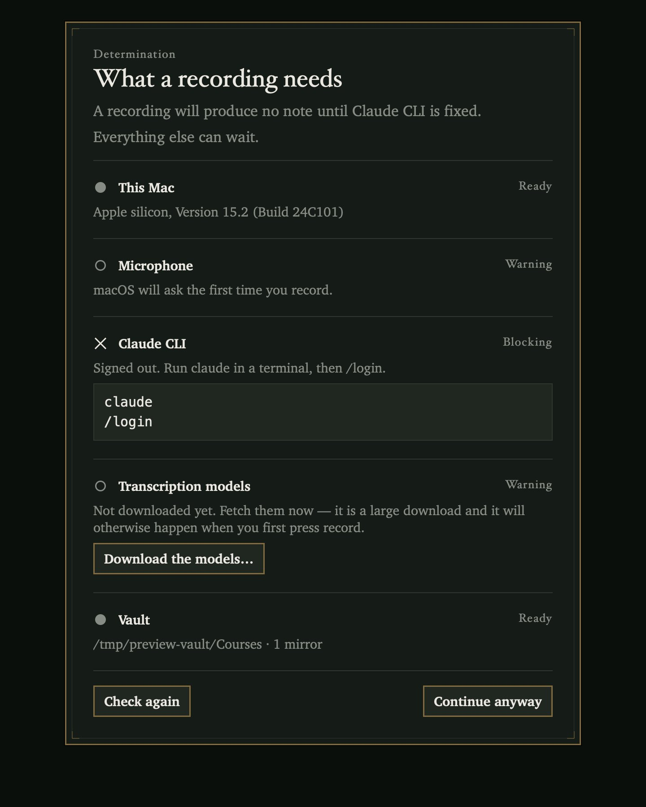
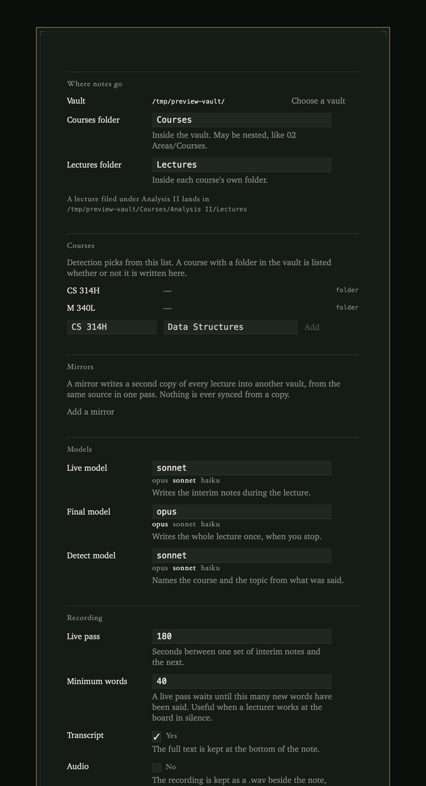

What you actually end up with
Not a transcript, and not a screen inside another app you now have to check. A markdown file in the vault you already keep, which Obsidian reads as an ordinary note. This is the real output for a lecture on binary search trees, trimmed in the middle where the notes run long.
---
title: "Binary Search Tree Deletion"
course: CS 314H
date: 2026-07-30
type: lecture
duration_min: 74
status: complete
detected_course: CS 314H
detection_confidence: high
tags:
- lecture
- cs-314h
---Binary Search Tree Deletion
Deletion, three cases
- Leaf. Remove it and null the parent's pointer.
- One child. Splice the child into its place.
- Two children. Copy the in-order successor's key into the node, then delete the successor instead. It has at most one child by construction, so case three reduces to case one or two.
Likely on exam
"The deletion case comes up on the final almost every year."
Sections, code blocks and the full transcript continue below in the real file.
The frontmatter is what Obsidian shows as properties, so the notes sort and filter by course and date without you tagging anything. The callout is there because the lecturer said it out loud; marking what was flagged as examinable is the one editorial judgement the app makes.
What it does
Audio goes to disk as it arrives. Not buffered in memory and written at the end. If the app crashes, or the battery goes, you lose the transcript and you still have the recording.
Transcription runs here. Parakeet TDT v3 through CoreML, on the Neural Engine. No audio ever leaves the machine. To be exact about what that does and does not mean: the recording stays put, but the text of the transcript is sent to Claude, because that is what the notes get written from.
Notes arrive during the lecture, not only after it. Every few minutes Claude writes an interim set from what has been said so far, so a lecture that ends badly, or a laptop that dies at minute fifty, still produced something worth reading.
When you stop, it starts over properly. The whole recording is transcribed again in a single pass, which is noticeably more accurate than the streaming text, and the note is written from that. The interim notes were the insurance policy; this is the real one.
It works out which course this was. Detection reads the transcript, matches it against the course folders already in your vault and against a roster if you keep one, and returns a course and a topic. When it is not confident it files under _Unsorted and says so in the note. It does not guess. A misfiled note quietly corrupts your revision material three months later, which is a worse outcome than an unfiled one sitting where you can see it.
A second copy, if you want one. Configure a mirror vault and every lecture is written into both, from the same source, in one pass. Nothing is ever synced from a copy.
The output is plain Obsidian markdown. YAML frontmatter with course, date, duration and status. Headings, lists, callouts. Anything the lecturer flagged as examinable comes back as an > [!important] callout, so the thing they said would be on the final is the thing you see first at 11pm. The library is read straight off the vault every time, with no index and no cache, so if you rename or move a note in Obsidian the app agrees with you on the next scan.
What it looks like





What you need before it will work
Three of these are the sort of thing that turns a first launch into twenty minutes of confusion, so they are worth reading in full before you download rather than after.
- An Apple silicon Mac on macOS 14 or later. Transcription runs on the Neural Engine; there is no Intel build.
- The
claudeCLI, logged in to a paid subscription. The notes are written by a model and spend that subscription. Without it you get a recording and a transcript and nothing else. - About 600 MB downloaded on first launch. The speech models are fetched once. Do it at home, not in a lecture theatre.
- A minute of patience with Gatekeeper. The app is not notarized, so macOS refuses the first launch and you have to allow it by hand.
Download
Free, MIT licensed, and the whole thing is on GitHub.